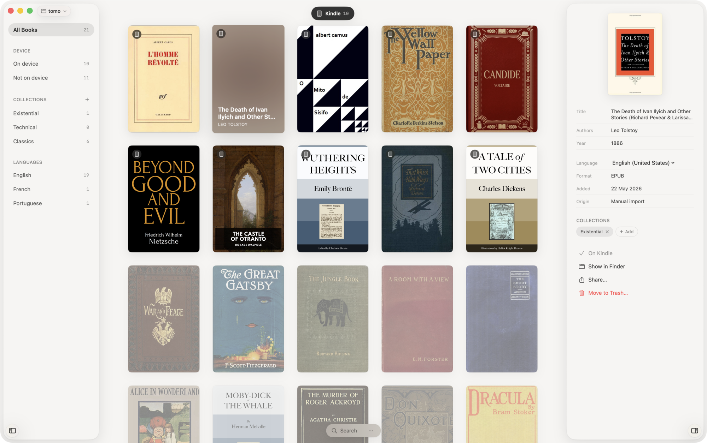

Tomo
A native macOS app for the books on your shelves and the ones still to come.

- Organise your library. Group books into collections of your own, swap a cover when one doesn't fit, fix the details when they're off.
- Send to device. Plug your Kindle in. Drag a book onto it. Format and cover sorted on the way over.
- Search beyond your shelves. Project Gutenberg comes built in. Add your own sources when you need more.
- Take it anywhere. Your library is a folder of files. Move it, sync it, copy it to another Mac. The books outlive the app.
Or install via Homebrew:
brew install --cask pdrbrnd/tap/tomoRequires macOS 26 or later.
Privacy
Tomo is local-first. Your library lives in a folder you own. Nothing about its contents leaves your Mac. The app reaches the network only when you ask it to: to fetch metadata, search a source, change a cover, or check for / install plugin updates.
Two background pings exist and are disclosed here. Sparkle checks appcast.xml for updates. Sentry receives a crash report when the app fails: stack trace and macOS version, no library contents, no file paths under your home folder. You can turn crash reports off in Settings → Privacy.
This site sets no cookies and runs no third-party trackers.